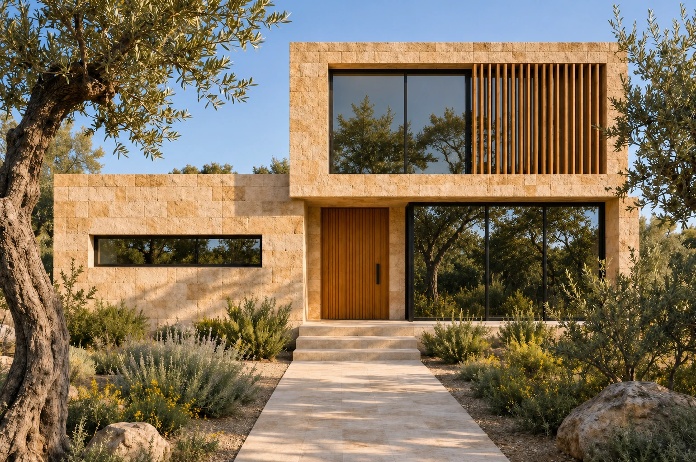

INTERACTIEVE DEMO
Van plan
tot huis.
Scrol verder en zie hoe de lijnen van de plattegrond van Casa Mirador veranderen in de fundering, de constructie en de gevel.
Sla de rondleiding overFUNDERING
Van papier
naar bouwgrond.
De omtrek, de muren en de markeringen voor de kolommen komen los van het papier en krijgen hun plek op het terrein.
CONSTRUCTIE
Het huis
krijgt vorm.
Op deze markeringen verrijzen de kolommen en de muren. De vloeren verbinden ze en de bovenverdieping krijgt vorm.
AFGEWERKTE GEVEL
Casa
Mirador.
Kalksteen, donkere aluminium ramen en eiken lamellen die boven het zonlicht filteren. Het tuinpad leidt naar de voordeur.